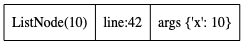
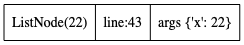
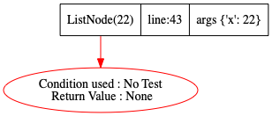
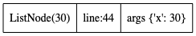
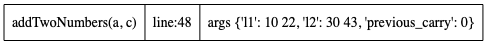
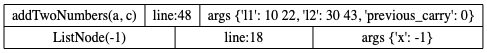
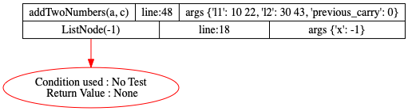
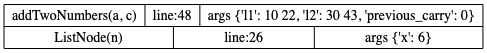
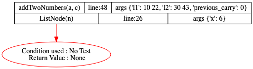
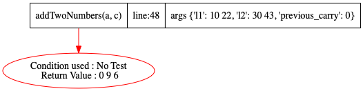

class ListNode:
def __init__(self, x):
self.val = x
self.next = None
self.prev = None
def __str__(self):
if not self.next: return str(self.val)
else: return str(self.val) + " " + str(self.next)
def __repr__(self):
return self.__str__()
def __eq__(self,other):
return self.__str__() == other.__str__()
def addTwoNumbers(l1, l2, previous_carry = 0):
p1 = l1 # watchvar ref:l1:btree p1
p2 = l2 # watchvar ref:l2:btree p2
carry = 0 # watchvar carry
head = ListNode(-1) # watchvar btree:prev:next:val head
tail = head # watchvar ref:head:btree tail
while p1 or p2 or carry:
v1 = p1.val if p1 else 0 # watchvar v1
v2 = p2.val if p2 else 0 # watchvar v2
n = v1 + v2 + carry
carry = n // 10
n = n % 10
node = ListNode(n)
if tail:
tail.next = node
tail = node
else:
head = node
tail = node
p1 = p1.next if p1 else None
p2 = p2.next if p2 else None
return head.next
def go():
# https://leetcode.com/problems/add-two-numbers/
a = ListNode(10) # watchvar btree:prev:next:val a
b= ListNode(22) # watchvar a
c = ListNode(30) # watchvar btree:prev:next:val c
d = ListNode(43) # watchvar c
a.next = b
c.next = d
addTwoNumbers(a,c)
Step:1,New function call at Line:42
Code executed: a = ListNode(10) # watchvar btree:prev:next:val a
Stack Trace generated

Step:2,Return seen at Line:6
Code executed: self.prev = None
Stack Trace generated
Step:3,New function call at Line:43
Code executed: b= ListNode(22) # watchvar a
Stack Trace generated

Step:4,Return seen at Line:6
Code executed: self.prev = None
Stack Trace generated

Step:5,New function call at Line:44
Code executed: c = ListNode(30) # watchvar btree:prev:next:val c
Stack Trace generated

Step:6,Return seen at Line:6
Code executed: self.prev = None
Stack Trace generated
Step:7,New function call at Line:45
Code executed: d = ListNode(43) # watchvar c
Stack Trace generated
Step:8,Return seen at Line:6
Code executed: self.prev = None
Stack Trace generated
Step:9,New function call at Line:48
Code executed: addTwoNumbers(a,c)
Stack Trace generated

Step:10,New function call at Line:18
Code executed: head = ListNode(-1) # watchvar btree:prev:next:val head
Stack Trace generated

Step:11,Return seen at Line:6
Code executed: self.prev = None
Stack Trace generated

Step:12,New function call at Line:26
Code executed: node = ListNode(n)
Stack Trace generated
Step:13,Return seen at Line:6
Code executed: self.prev = None
Stack Trace generated
Step:14,New function call at Line:26
Code executed: node = ListNode(n)
Stack Trace generated
Step:15,Return seen at Line:6
Code executed: self.prev = None
Stack Trace generated

Step:16,New function call at Line:26
Code executed: node = ListNode(n)
Stack Trace generated

Step:17,Return seen at Line:6
Code executed: self.prev = None
Stack Trace generated

Step:18,Return seen at Line:35
Code executed: return head.next
Stack Trace generated
